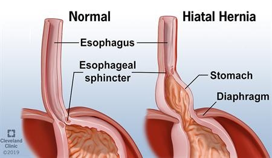

Hiatal hernia

SYMPTOMS:
- Heartburn
-
Regurgitation of food or liquids into the mouth
-
Backflow of stomach acid into the esophagus (acid reflux)
-
Difficulty swallowing
-
Chest or abdominal pain
-
Feeling full soon after you eat
-
Shortness of breath
-
Vomiting of blood or passing of black stools, which may indicate gastrointestinal bleeding
CAUSES:
- Age-related changes in your diaphragm
-
Injury to the area, for example, after trauma or certain types of surgery
-
Being born with an unusually large hiatus
-
Persistent and intense pressure on the surrounding muscles, such as while coughing, vomiting, straining during a bowel movement, exercising or lifting heavy objects
DIAGNOSIS:
- X-ray of your upper digestive system. X-rays are taken after you drink a chalky liquid that coats and fills the inside lining of your digestive tract. The coating allows your doctor to see a silhouette of your esophagus, stomach and upper intestine.
-
Upper endoscopy. Your doctor inserts a thin, flexible tube equipped with a light and camera (endoscope) down your throat, to examine the inside of your esophagus and stomach and check for inflammation.
-
Esophageal manometry. This test measures the rhythmic muscle contractions in your esophagus when you swallow. Esophageal manometry also measures the coordination and force exerted by the muscles of your esophagus.
TREATMENT
- Your doctor is likely to recommend that you first try lifestyle modifications and over-the-counter medications. If you don't experience relief within a few weeks, your doctor might recommend prescription medication or surgery.